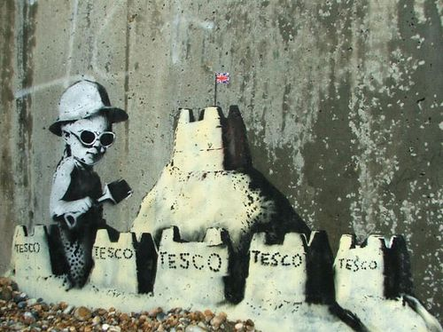

Credit
This Banksy work was found in Hastings by showing a young child building sandcastles. This in itself is not controversial, but when we notice that Tesco is printed on the sandcastles it takes on a new meaning. This is a common theme in Banksy’s work and here he seems to be indicating that the supermarket giant is taking over the country! The artwork is still visible on the Sea wall although it has been defaced by other graffitti artists.
2010-09
Spray Paint
Hastings, UK